An electrical-engineering workspace to design, simulate, calculate, visualise in 3D and document electronic circuits, building installations and control systems — operated by mouse and keyboard or by hand gestures through a webcam.
59component types in 16 categories
3engineering modes: electronic · installation · control
20. Three-year cost of ownership and sensitivity@@P20@@
21. Pilot plan and success criteria@@P21@@
22. Editions, go-to-market, support and training@@P22@@
23. Risks and mitigations@@P23@@
24. Quality, safety and governance@@P24@@
25. Detailed work breakdown@@P25@@
26. Decision requested@@P26@@
Appendices: standards, tests, glossary@@PAPP@@
1Executive summary
NULL-TECH Circuit Studio already exists as working software. A user can start from an empty workspace, build an electronic circuit, a building electrical installation or a relay/PLC control circuit, simulate or calculate it, inspect it in 3D and print engineering drawings — all generated from one engineering model.
One model, every view2D, 3D, simulation, calculations, drawings and exports derive from the same data and cannot disagree.
Verified physicsSimulator results agree with ngspice (the reference open-source SPICE engine) within 0.1 mV on every DC example.
Touch-free controlWebcam gestures use exactly the same tools as the mouse, with preview and confirmation before any change.
What we propose
Pilot (3 months): deploy in university laboratories, run an independent review of every calculation rule by a licensed electrical engineer, and test hand tracking with real webcams and users.
Productisation (≈ 9–12 months): complete the safety calculations, localise (Arabic, Kurdish Sorani; regional rules), and ship signed desktop installers.
Commercial launch: free student edition plus institutional and professional licences (options in §9.5).
Indicative effort for the full programme is ≈ 48 person-months (§19). Running costs are low because the product needs no servers: it runs on the user's own computer.
Positioning. The software assists engineers; it does not replace them. No result is ever labelled “safe” or “compliant”. Checks that are not implemented are shown as not evaluated, and every calculation shows its formula, inputs, assumptions and source.
Evidence tags used in this document: MEASURED obtained by running the software or its tests; ESTIMATE engineering or planning judgement; ASSUMPTION a value to be replaced with local data.
2Problem and opportunity
Problem today
Consequence
How NULL-TECH addresses it
Fragmented tools: schematic editor, simulator, spreadsheets, CAD, 3D viewer
The same design is re-entered several times and copies drift out of date
One model feeds every view, calculation and export
Opaque calculators
A number without formula, assumptions or source is risky for safety-relevant work
Every result shows formula, inputs, assumptions and cited standard
Teaching needs hands-on construction
Students watch rather than build; lab equipment is limited
15 buildable examples, live simulation, automatic lab report
International tools rarely reflect regional requirements or Arabic/Kurdish users
Rules are project data, not code; localisation layer prepared (RTL-ready)
3The product
Mode
Capabilities in the current version
Electronic circuits
Resistors, capacitors, inductors, DC/AC/current sources, diodes, LEDs, Zeners, BJTs, MOSFETs, op-amps, logic gates, relays, transformer, connectors, probes. Wiring with snapping and junctions, net labels. DC operating point, transient waveforms, AC frequency response. Rating checks (power, current, voltage, polarity).
Installations
Rooms (drawn or imported from DXF), distribution boards, luminaires, switches, sockets, appliances, cable trays. Circuits created from a board; cables routed through trays; lengths from the actual route. Load, design current, voltage drop, suggested breaker and conductor size, earth-fault loop impedance (TN/TT), breaking capacity, phase balance, schedule, BOM, single-line diagram.
Control systems
Push buttons, E-stop, limit switch, overload contact, contactor coils with tagged contacts, pilot lamps, breakers, PLC inputs/outputs and a PLC program in IEC 61131-3 Structured Text, all executed by the simulator.
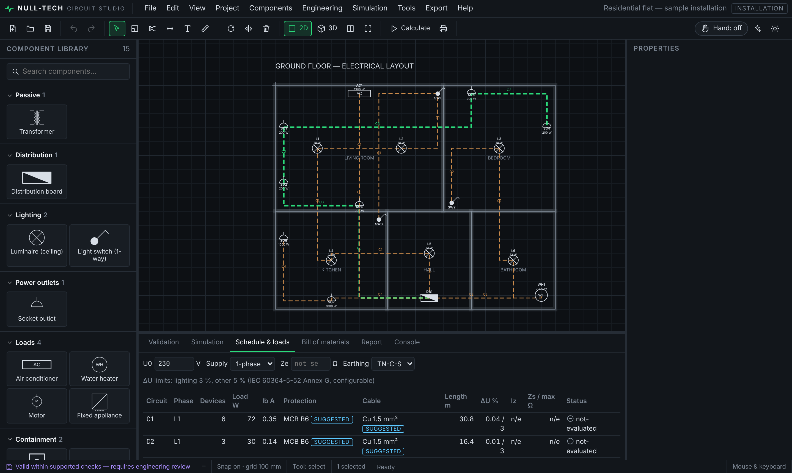
Fig. 1 — Installation plan: circuit C3 highlighted; schedule with Ib, protection, cable, length, ΔU, Zs and status.
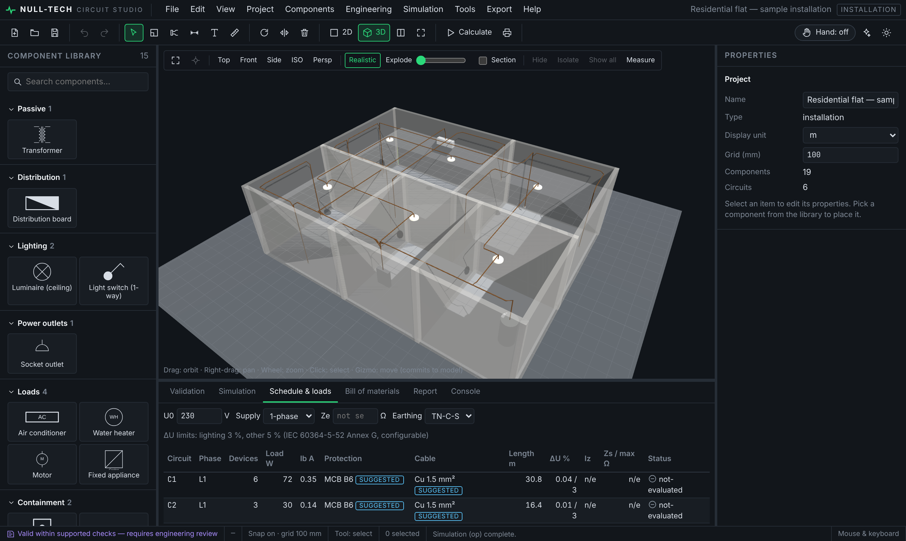
Fig. 2 — Same model in 3D: walls, devices at mounting height, cables at route height.
Cross-cutting capabilities
Area
Capability
3D
Parametric component models with terminals exactly on schematic pins; orbit, orthographic/perspective, Top/Front/Side/ISO, section plane, exploded view, hide/isolate, measuring; LED and lamp glow from simulated current; moving a part in 3D edits the model.
Drawings
A0–A4 and custom sheets, scale 1:N or fit, ISO frame with zone references, title block, revisions, schematics, installation/lighting/power plans, single-line diagram, schedules, BOM; vector PDF, SVG, PNG, JPEG, browser printing.
Mouse, keyboard (customisable shortcuts), hand tracking; preview → validate → confirm/reject; undo/redo for every operation.
Education
15 examples (Ohm's law to motor starters and PLC logic) with theory, hand calculation and steps; engineering/lab report export.
Assistant
Offline rule-based assistant: “create a red LED circuit with 12 V”, “place 4 lights in living room”, “why is this not working”. Proposals are previewed and validated like any other operation.
Platforms
Any modern browser (served locally), or a Tauri desktop application with native save/open dialogs.
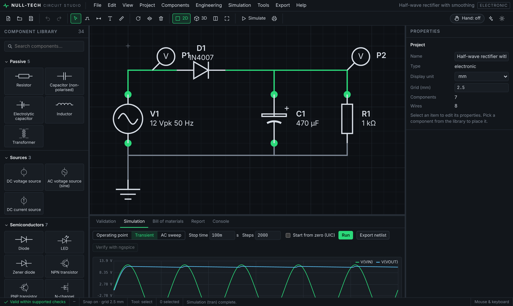
Fig. 3 — Half-wave rectifier transient: input sine and smoothed output.
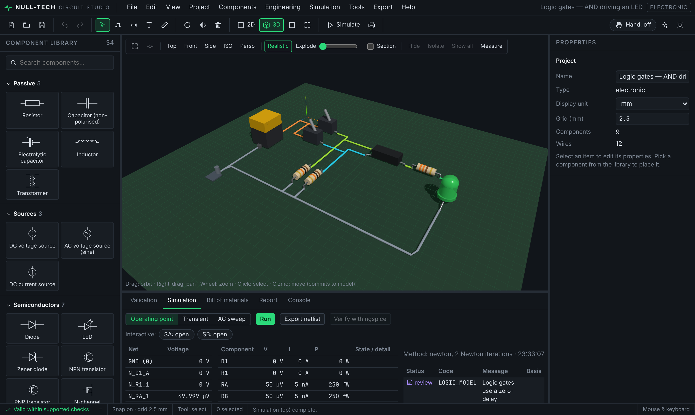
Fig. 4 — Logic-gate circuit in 3D; gate, resistors and LED placed at schematic positions.
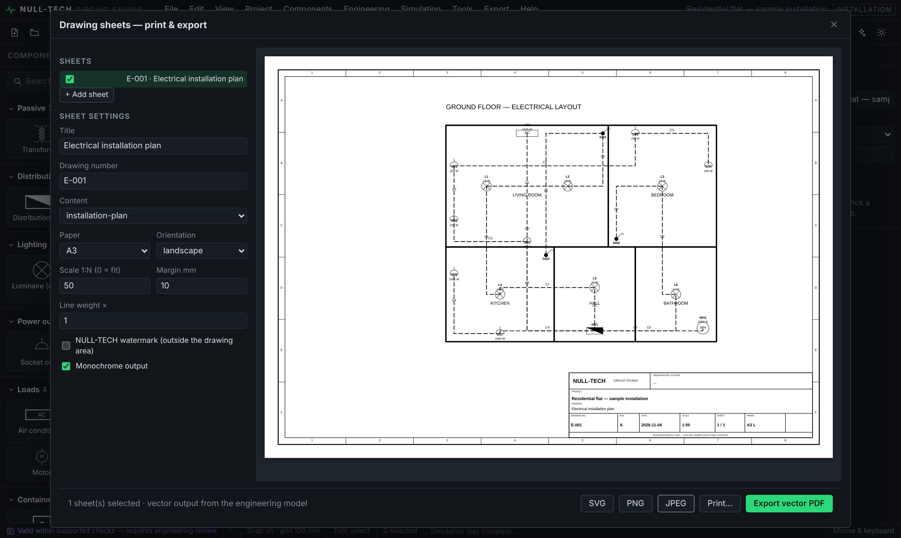
Fig. 5 — Drawing sheet with ISO frame and title block (vector PDF export).
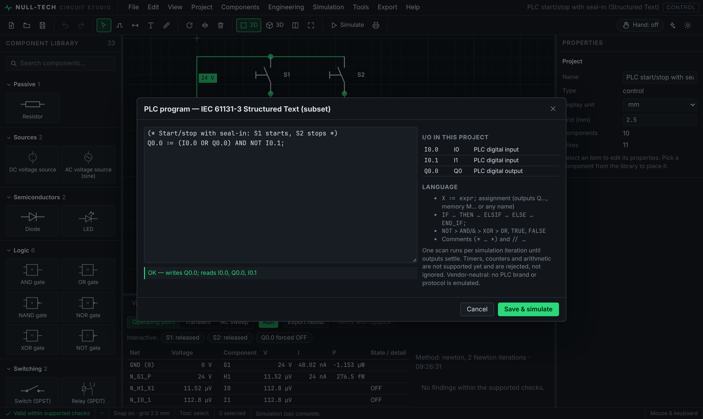
Fig. 6 — PLC program (Structured Text) driving the simulated control circuit.
4Users, personas and journeys
Four primary user groups were derived from the product brief. Each journey below is a workflow the current version already supports end to end.
15 ready examples with theory; consistent results; gesture control at the projector
Electrical designer residential / commercial
lay out installations fast, size cables and breakers, issue drawings
spreadsheets for loads and ΔU disconnected from the drawing; re-entering data
plan → circuits → calculations → schedule → drawings from one model, with every assumption visible
Technician / trainee training centres
practise control wiring and PLC logic safely
no access to real panels; risk when experimenting
motor-starter, relay and PLC circuits that respond to button presses in simulation
Journey 1 — student lab: LED resistor sizing
#
Step
What the software does
1
Help ▸ Examples ▸ “LED with series resistor” (or build it)
loads an editable project; theory shows I ≈ (9 − 1.9)/470
2
Press F5
solves the circuit in 0.4 ms; shows 9 V and 1.89 V on the wires
3
Change R1 to 100 Ω
LED current exceeds 20 mA → ERROR with the rule that triggered it
4
Open 3D
LED glows in proportion to the simulated current
5
Report tab ▸ Download
lab report with net voltages, currents, power, method and findings
Journey 2 — designer: residential installation
#
Step
What the software does
1
Import the architect's DXF plan as rooms
closed polylines become rooms (metres converted to millimetres)
2
Place board, luminaires, sockets, cable trays
devices get default powers flagged as assumed
3
Circuit tool: board → devices → Enter
cables routed through trays; preview with Ib, length and ΔU before confirming
4
Enter supply Ze and earthing system
Zs and disconnection checks per circuit; breaking capacity
5
Print ▸ plan, single-line, schedule, BOM
multi-sheet vector PDF with title blocks
Journey 3 — instructor demonstration with gestures
Instructor stands at the projector: points to move the cursor, pinches on a pin and drags to draw a wire, makes a fist to confirm the preview, a V-sign to reject it, opens the palm to pause. No mouse needed; any mistake can be undone.
5Physics and engineering foundations
This section lists the physical laws and numerical methods the software actually implements (source: frontend/src/simulation, frontend/src/calculations).
5.1 Circuit laws and network formulation
Ohm's law, Kirchhoff's current and voltage laws are enforced through Modified Nodal Analysis (MNA). For n nodes and m voltage-defined branches:
[ G B ] [ v ] [ i ] G : conductances (n×n) v : node voltages
[ C D ] [ j ] = [ e ] B,C : branch incidence j : branch currents (sources, inductors, op-amp outputs)
i : injected currents e : source voltages
Solved by LU decomposition with partial pivoting. A 1 pS shunt on every node keeps floating nodes solvable; nets with no DC path to ground are reported as warnings.
5.2 Non-linear devices — Newton–Raphson
x(k+1) = x(k) − J(x(k))⁻¹ · F(x(k)) converged when |Δv| ≤ 10⁻⁴·|v| + 1 µV
fallbacks: gmin stepping (10⁻² → 10⁻¹² S), then source stepping (5 % → 100 %)
Device
Model equation
Diode / LED
I = Is·(e^(V/(N·Vt)) − 1), series Rs; LED Is fitted so I = 20 mA at the stated Vf (N = 2); SPICE junction-voltage limiting (pnjlim)
Zener
forward Shockley term + breakdown −IBV·e^(−(V+BV)/(N·Vt))
coil = resistance; contacts change at pick-up / drop-out thresholds; iterated to a consistent state; oscillation detected
Logic gate
input HIGH if V ≥ VIH, LOW if V ≤ VIL (CMOS: 0.7/0.3 × Vcc; 74LS: 2.0/0.8 V); output VOH/VOL through Rout; zero delay
PLC
Structured Text scan each iteration: inputs from node voltage ≥ threshold, outputs switch a sourcing supply onto the terminal
5.3 Energy-storage elements — transient analysis
Capacitor i = C·dv/dt trapezoidal companion: i(n+1) = (2C/h)·v(n+1) − [(2C/h)·v(n) + i(n)]
Inductor v = L·di/dt trapezoidal companion: v(n+1) = (2L/h)·[i(n+1) − i(n)] − v(n)
First step after t = 0 uses backward Euler to avoid trapezoidal start-up error.
5.4 Frequency domain — AC analysis
Linearised at the operating point; capacitor admittance Y = jωC; inductor impedance Z = jωL;
complex MNA solved per frequency on a logarithmic sweep → magnitude (dB) and phase (°).
5.5 Building-installation physics
Quantity
Formula implemented
Source
Apparent power, demand
S = P / cos φ; S_d = Σ S × demand factor (arithmetic sum, conservative)
MediaPipe hand landmarks, gesture features, One Euro filter
Graph algorithms
union-find net extraction, Dijkstra routing through cable trays
Technical drawing
ISO sheet sizes, frames, title blocks, scales, vector output
Software engineering
immutable model, command history, schema migration, automated testing, CI
6Validation against independent references
Every value below comes from an automated test that runs on each build MEASURED.
Case
Independent reference
Expected
Software
Tolerance
Ohm's law, 9 V / 1 kΩ
I = V/R
9.000 mA
9.000 mA
10⁻⁹
Two-source network, node A
KCL by hand: 75/11 V
6.8182 V
6.8182 V
10⁻⁶
Voltage divider 10 k / 4.7 k from 10 V
Vin·R2/(R1+R2)
3.1973 V
3.1973 V
10⁻⁶
RC charging at t = τ = 0.1 s
5·(1 − e⁻¹)
3.1606 V
3.161 V
5×10⁻⁴
RC low-pass at fc
−20·log₁₀√2, −45°
−3.010 dB
−3.010 dB
10⁻³
Ideal transformer 10:1, 23 Ω load
power balance 23 W / 230 V
0.100 A
0.100 A
10⁻⁶
All DC examples (11 circuits)
ngspice-42 operating point
every node agrees
0.1 mV + 0.01 %
Rectifier and op-amp transients
ngspice-42 transient
waveforms agree
2 % / 0.01 V
Voltage drop, 2 kW, 20 m, 2.5 mm² Cu
Annex G by hand
2.998 V
2.998 V
10⁻³
R1+R2, 20 m, 2.5 / 1.5 mm²
L·ρ1·(1/S + 1/S_PE)
0.4598 Ω
0.4598 Ω
10⁻⁹
Max Zs, B16 breaker, 230 V
U0 / (5·In)
2.875 Ω
2.875 Ω
10⁻⁹
Cable routed through trays
sum of route segments
10 000 mm
10 000 mm
10⁻⁶
Behaviour checks (pass / fail)
LED over-current, resistor over-power, capacitor reverse polarity → reported as ERROR, never silently accepted.
Missing ground, voltage-source loops, PLC syntax errors → simulation refused with a precise message.
Inverter ring oscillator → oscillation detected instead of a fake steady state.
Motor-starter seal-in, relay pick-up, PLC start/stop, AND-gate truth table → correct states in every combination.
Without supply impedance Ze, the fault-loop check is NOT EVALUATED — never passed.
Performance on the development machine MEASURED
Operation
Time
Operation
Time
DC operating point, LED circuit
0.37 ms
Installation calculation, 6-circuit flat
0.22 ms
Transient, rectifier, 2 000 steps
11.6 ms
Vector PDF of one A3 sheet
1.7 ms
AC sweep, 1 Hz–1 MHz, 121 points
2.0 ms
DXF export of the flat
0.32 ms
Gesture recognition + commands, per frame
0.011 ms
Main application bundle (gzip)
≈ 0.33 MB
Timings are from a cloud development container; they show the calculations are far below interactive limits, not a guarantee for every device. Webcam landmark detection time depends on the camera and CPU and has not yet been measured on real hardware.
7Worked engineering examples
The following numbers are the software's own output for the shipped examples MEASURED, followed by an independent hand check.
Example A — LED with series resistor (9 V, 470 Ω, red LED Vf = 1.9 V at 20 mA)
slightly below 1.9 V because I < 20 mA — consistent with the diode law
Resistor voltage / power
7.1144 V / 107.7 mW
7.1144 × 0.015137 = 0.1077 W (43 % of a 0.25 W rating — below the 50 % margin)
Source power delivered
136.2 mW
9 V × 15.137 mA = 136.2 mW = 107.7 + 28.5 mW (energy balance)
Example B — residential flat, final circuits (U0 = 230 V, Ze = 0.35 Ω entered, Cu PVC)
Circuit
Devices
Load W
cos φ
Ib A
Route m
ΔU %
S mm²
In A
R1+R2 Ω
Zs / max Ω
C2 lighting
3
30
0.90
0.145
16.4
0.015
1.5
B6
0.471
0.821 / 7.667
C3 sockets
5
1 000
0.90
4.831
47.9
1.533
1.5
B6
1.376
1.726 / 7.667
C4 kitchen
2
2 000
0.90
9.662
16.7
1.324
1.5
B10
0.480
0.830 / 4.600
C5 air-con
1
1 500
0.85
7.673
11.9
0.973
1.5
B8
0.342
0.692 / 5.750
C6 water heater
1
2 000
1.00
8.696
6.6
0.717
1.5
B10
0.190
0.540 / 4.600
Board DB1 total demand 7 211 VA (31.4 A on L1). Bill of materials: 130.3 m of Cu 3×1.5 mm² cable measured along the routes. Cable sizes and breakers are suggestions; current-carrying capacity is not evaluated until the designer enters a sourced ampacity table.
Hand check of circuit C3
S_demand = 1 000 W / 0.9 = 1 111.1 VA Ib = 1 111.1 / 230 = 4.831 A ✓
Breaker: smallest IEC 60898-1 rating ≥ 4.831 A → 6 A (curve B) ✓
ρ1 = 1.25 × 0.017241 = 0.021551 Ω·mm²/m
R1+R2 = 47.9 m × 0.021551 × (1/1.5 + 1/1.5) = 1.376 Ω ✓
Zs = Ze + R1+R2 = 0.35 + 1.376 = 1.726 Ω
Ia = 5 × 6 A = 30 A → max Zs = 230 / 30 = 7.667 Ω → 1.726 ≤ 7.667 condition met ✓
Voltage drop uses the downstream current in each of the 5 cable segments (daisy chain),
so the total 1.533 % is lower than the worst-case estimate 2·ρ1·L·Ib/S = 6.65 V (2.9 %).
Example C — control logic (DOL motor starter)
Action
K1 coil
H1 lamp
Physics / logic
Initial
off
off
no path through S1 (open)
Press S1
on
on (50 mA)
24 V across 200 Ω coil = 120 mA > pick-up; lamp 24 V / 480 Ω
Release S1
on
on
seal-in contact K1.1 keeps the coil energised
Press S0 (stop)
off
off
NC contact opens; coil voltage below drop-out
8System architecture
Decision
Reason
Web technology (TypeScript, React, Three.js) + Tauri desktop shell
One codebase for browser and desktop; WebGL for 3D; small installers using the system web view.
Python local service
Mature computer-vision stack (OpenCV, MediaPipe) and easy ngspice integration.
Built-in simulator + ngspice as reference
Works with nothing installed; ngspice provides independent verification.
Local-first, no server
Offline use, privacy, near-zero running cost.
Reference data as cited JSON
Rules can be replaced per jurisdiction without code changes.
Codebase size MEASURED: ≈ 13 000 lines of TypeScript (application), ≈ 1 000 lines of Python (service), ≈ 1 800 lines of tests.
9Models
9.1 Simulation models
44 of the 59 component types take part in simulation; the remaining 15 are documentation or installation devices (generic ICs, microcontrollers, boards, luminaires …) and are reported as not evaluated where relevant. Device equations are listed in §5.2.
9.2 Engineering data model
All lengths in millimetres; stable random IDs; JSON Schema published in shared/schemas/project.schema.json; schema version and step-wise migrations.
9.3 Computer-vision model
Stage
Model / method
Hand landmarks
MediaPipe Hands (pre-trained by Google, used as-is): 21 landmarks per hand, up to 2 hands.
Gesture classification
Deterministic geometric rules (joint angles, distances normalised by palm size) — no training data needed, fully explainable. Verified for all poses at three hand sizes and ±35° tilt.
Temporal filtering
State machine: N stable frames (default 4; pinch 2), pinch hysteresis 0.32 / 0.45 × palm, 0.6 s command cool-down.
Cursor smoothing
One Euro filter (Casiez et al., 2012), min cut-off 1 Hz, β = 4.
9.4 3D models
Parametric meshes for about 40 model types (axial resistor with IEC 60062 colour bands computed from the resistance value, capacitors sized by capacitance, LEDs, TO-92/TO-220, DIP packages with real pin count, relays, transformers, boards, luminaires, sockets, appliances, cable trays …). See §10.
9.5 Business model options FOR DECISION
Option
Description
Fit
Free student edition
Full electronic and control modes; installation mode for study
Adoption in universities
Institutional licence
Per-laboratory or campus licence, teaching material, support
Core open source; paid rule packs, support and desktop builds
Community growth, trust in calculations
103D pipeline
Aspect
Specification
Coordinate system
2D plan (x, y↓) → 3D (X = x, Z = y, Y = elevation). Units millimetres. 2D rotation θ → 3D rotation about Y of −θ; mirror = scale X −1.
Correspondence
Lead tips and terminals of every 3D model sit on the library pin coordinates — verified by an automated test (within 1 mm).
Rendering
Three.js WebGL; physically based materials; hemisphere + directional light with soft shadow maps (2048²); sRGB output.
Performance
Incremental synchronisation: each entity has a content hash, only changed entities are rebuilt; shared materials are cached.
Interaction
Orbit, pan, zoom; perspective/orthographic; Top/Front/Side/ISO; fit to project/selection; picking into the shared selection; move gizmo that writes back to the model (snapped to grid); hand-gesture orbit and selection.
Analysis views
Horizontal section plane, exploded view, hide/isolate/show all, point-to-point measuring, simplified vs realistic materials.
Simulation feedback
LEDs glow in proportion to simulated current; pilot lamps and relay indicators light when energised.
Installation scenes
Floors and walls extruded from room polygons (shared walls de-duplicated); devices at mounting height; cables as tubes along the route with vertical drops; conductor colours configurable (IEC 60445 defaults).
Export
GLB / glTF (metres, component ID, reference, type and pin nets in node extras), OBJ and STL (geometry only — format limitation).
3D needs for the next stage
Manufacturer-accurate models: import STEP/GLB models from manufacturers for selected parts (licence review needed per vendor).
Building context: IFC import for walls, ceilings and openings; multi-floor display.
Performance on large buildings: instanced rendering for repeated devices; level-of-detail meshes.
Hardware: any GPU with WebGL 2 is sufficient for current scenes ESTIMATE; integrated graphics have not yet been benchmarked.
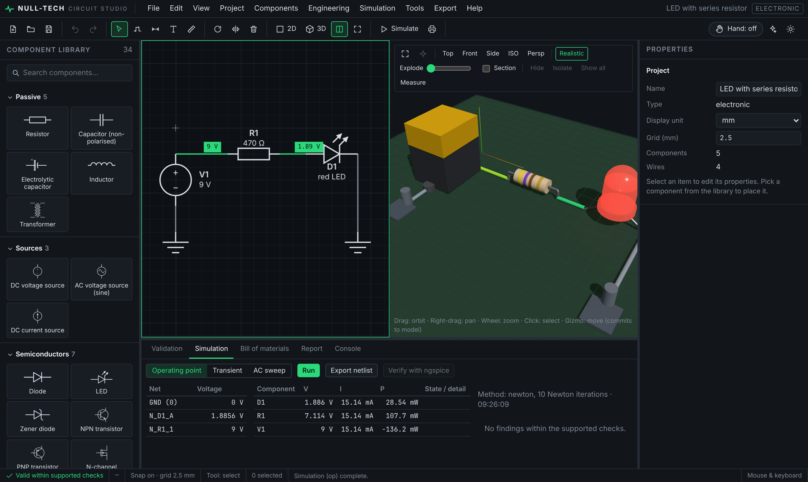
Fig. 7 — 2D and 3D side by side from one model; simulated voltages on the schematic, LED lit in 3D.
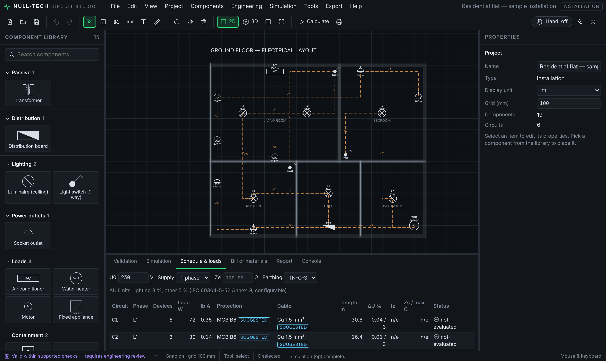
Fig. 8 — Installation plan that generates the 3D building in Fig. 2.
11Photorealistic visualisation (Blender pipeline)
Beyond the real-time 3D viewport, the same engineering model can be rendered photorealistically for presentations, client reviews, teaching material and marketing. The images on this page and the next are rendered from the actual project files, not drawn by hand.
Fig. B1 — Residential flat, rendered with Blender Cycles from the app's GLB export: walls extruded from room polygons, luminaires at 2.7 m, socket and switch plates at mounting height, cable routes at ceiling level.
NULL-TECH model ──Export ▸ 3D: GLB──▶ GLB (metres, component IDs and nets in node extras)
──▶ tools/blender/render.py (headless: blender -b -P render.py -- in.glb out.png MODE W H SAMPLES …)
──▶ modes: building · board (circuit close-up with depth of field) · technical (Workbench outlines)
Aspect
Detail
Renderer
Blender 4.0, Cycles path tracer on CPU (no GPU needed); Workbench for technical views
Scene set-up (automatic)
model import, outward normals recomputed, ground or solder-mask plane, sun + area light, neutral world, camera framed on the model bounding box
Fidelity
geometry, materials and simulation state (lit LEDs) come from the model; resistor colour bands are computed from the actual resistance (IEC 60062)
Render time MEASURED
≈ 17 s for an 800 × 500 preview of the flat (48 samples, 4 CPU cores); final 1600–1800 px images ≈ 2–5 min each
Quality improvement found
rendering exposed overlapping walls where rooms share only part of an edge; plus double-covered corner squares where walls meet; the 3D generator was fixed (walls split at every room corner, each junction square owned by exactly one wall) and tests added
Renders of electronic and control projects
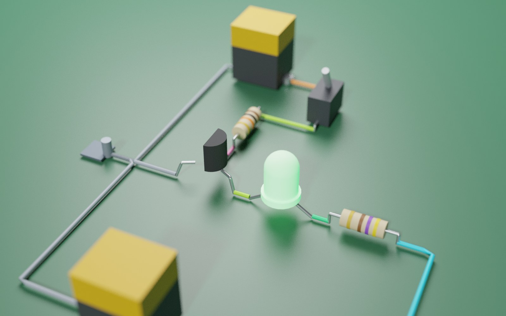
Fig. B2 — Transistor switch: 9 V battery, TO-92 transistor, colour-coded resistors, green LED lit by the simulated collector current.
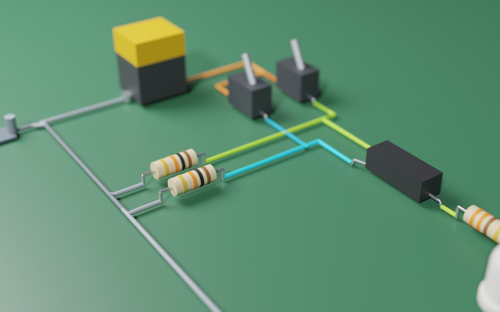
Fig. B3 — Logic-gate circuit: toggle switches with pull-down resistors, DIP gate, LED output.
Resistivities, standard sizes, breaker ratings, ΔU limits, trip multiples — each with its source
Shipped with the software (JSON)
No
User ampacity tables & prices
Values the designer enters, with source
Inside the project file
No
Camera frames
Live video for landmark detection
Memory only; newest frame kept, never written to disk
Yes (image) — never leaves the machine
Hand landmarks
21 points per hand per frame
Memory; optional recording with --record
Low (no image)
Shortcuts, favourites
UI preferences
Browser storage
No
12.2 Data flows and privacy
No account, no telemetry, no cloud upload: the application works fully offline.
The camera service listens only on 127.0.0.1 and refuses browser connections from non-local origins (tested).
ngspice verification runs locally; netlists with control blocks, includes or shell commands are rejected (tested).
Recommendation for institutional roll-out: a short privacy notice explaining camera use, and an explicit on/off control (already present).
12.3 Exchange formats
Format
Direction
Preserves
Limits
.ntcs.json
read / write
everything; versioned, schema-validated
—
PDF / SVG
write
vector drawings at true scale, title block
not re-importable
PNG / JPEG
write
raster drawings (200 dpi)
raster
DXF R12
read / write
geometry, layers, text, units
blocks, hatches, splines not imported
SPICE (.cir)
read / write
R C L V I D Q M, models, connectivity
subcircuits, controlled sources reported
GLB / glTF
write
geometry, materials, component identity
—
OBJ / STL
write
geometry
no identity (format)
CSV / HTML
write
bill of materials; engineering / lab report
—
12.4 Data quality controls
Every file is parsed, migrated and validated on open (unknown component types, broken wire references, missing boards and malformed polygons are reported precisely). All 15 sample projects are validated against the published JSON Schema in the test suite.
13Security and threat model
The product runs locally with no accounts or servers, which removes most network attack surface. Remaining threats and their treatment:
Threat
Entry point
Mitigation
Status
Malicious or corrupt project file
File ▸ Open
strict parse + schema validation + reference checks before loading; no code execution from files
tested
Web page hijacking the local camera service
WebSocket on 127.0.0.1
binds to loopback only; browser connections refused unless the origin is localhost
tested
Command injection through ngspice
“Verify with ngspice” netlist
.control, .include, .lib and shell lines rejected; runs in a temporary directory with timeout
tested
Camera privacy
webcam frames
frames processed in memory, newest only, never stored or transmitted; explicit enable/disable
by design
Malicious DXF / SPICE import
import menus
parsers only extract geometry / elements; unsupported content reported, never executed
tested
Supply-chain compromise
npm / PyPI / crates
small dependency set, lock files, CI builds; add dependency audit in release gate
capabilities limited to dialog-selected save/open; no shell access granted
configured
14Accessibility and localisation
Area
Current state
Next step
Input alternatives
mouse, keyboard (every command has a shortcut, remappable), hand gestures
voice commands (research)
Visual
dark and light themes; status shown by icon + text + colour (not colour alone)
high-contrast theme; scalable UI
Screen readers
labelled toolbar, dialogs and panels
audit with NVDA / VoiceOver
Languages
English; translation layer in place, RTL-ready
Arabic, Kurdish (Sorani) by qualified translators
Regional rules
all limits and tables are project data with sources
Iraq / Kurdistan rule pack after review
15Hand tracking and human factors
Gesture
Command
Index finger pointing
move cursor
Thumb–index pinch
select / drag / draw
Release pinch
finish operation
Open palm (held)
cancel + pause
Fist (held)
confirm preview
V-sign (held)
reject preview
Two hands pinching
pan / zoom
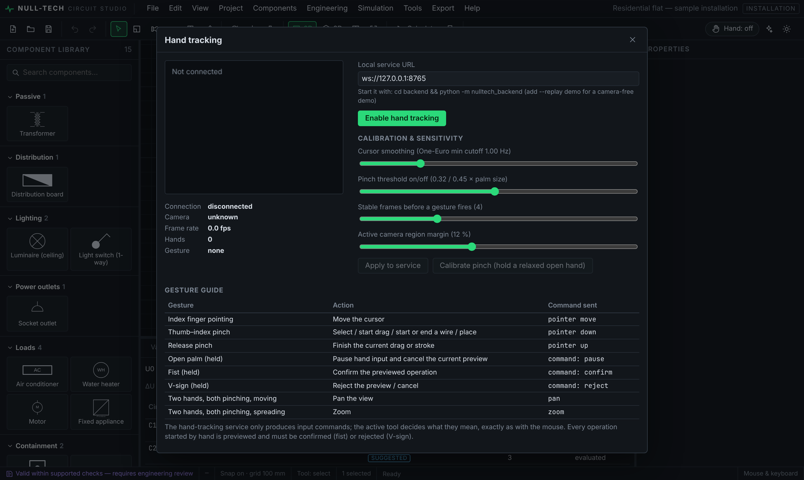
Fig. 9 — Hand-tracking panel: connection, camera status, landmark preview, sensitivity and calibration, gesture guide.
Robustness built in
Newest-frame capture (no backlog); hand lost during a drag → automatic release after 0.35 s; reconnect with back-off; mouse and keyboard always active.
Calibration from a relaxed open hand; adjustable smoothing, pinch thresholds, stable-frame count and active camera region.
Every gesture-initiated change is previewed and requires a confirm gesture — accidental gestures cannot change the design.
Human-factors work still required
Study
Purpose
Measure
Real-webcam latency
End-to-end delay from hand movement to cursor
ms, by camera and CPU class
Recognition accuracy
Different hands, skin tones, lighting, backgrounds
false accept / reject per gesture
Task performance
Place, wire, confirm — hand vs mouse
time, errors, SUS score
Fatigue
“Gorilla-arm” over longer sessions
self-reported effort (Borg scale)
Accessibility
Users with limited fine motor control
task completion
16Requirements: hardware, software, people
16.1 End-user computer ESTIMATE
Item
Minimum
Recommended
Processor
dual-core, 64-bit
quad-core (hand tracking + 3D at the same time)
Memory
4 GB
8 GB
Graphics
WebGL 2 capable (integrated is fine)
any discrete or recent integrated GPU
Display
1366 × 768
1920 × 1080 or larger; second screen for drawings
Browser / OS
recent Chrome or Edge; Windows 10+, macOS 12+, Linux
desktop app (Tauri)
Webcam (optional)
720p at 30 fps
1080p at 30–60 fps, fixed mount, even lighting
Python (optional)
3.10+ for hand tracking
bundled in the future desktop installer
Disk
a few MB in the browser; desktop installer size not yet measured
+ project files (typically < 1 MB each)
Basis: the main application bundle is ≈ 0.33 MB compressed and calculations take milliseconds (measured, §6). These requirements have not yet been benchmarked on low-end machines; doing so is part of the pilot.
16.2 Development and test environment
Need
Detail
Toolchain
Node.js 20+, TypeScript 5.9, Vite 7, React 19, Three.js; Python 3.10+, OpenCV, MediaPipe, websockets; Rust + Tauri 2 for desktop builds; ngspice for verification.
Continuous integration
Type-check, 88 application tests, 65 service tests, production build, 5 browser workflows on every change (GitHub Actions workflow included).
Test hardware
Windows, macOS and Linux machines; 3–5 webcam models; a low-end laptop; projector for classroom tests.
Signing
Apple Developer Program, Windows code-signing certificate.
16.3 Non-technical needs
Licensed electrical engineer to review every calculation rule and reference value (mandatory before professional use).
Standards access: current editions of IEC 60364 parts 4-41, 4-43, 5-52; IEC 60898-1; IEC 60228; and the applicable national rules.
Regional rules: written requirements for Iraq / Kurdistan Region from the competent authority.
Translators for Arabic and Kurdish (Sorani) with technical vocabulary.
Pilot partners: at least one university department or training centre.
Legal: licence terms, disclaimer wording, privacy notice, third-party licence review (all current dependencies are open source).
17Team roles and responsibilities
Role
Responsibilities
Involvement
Product owner / project manager
scope, priorities, pilot partners, schedule, budget, reporting
0.5 FTE
Electrical engineer (licensed)
review and sign-off of calculation rules, reference data, regional rules, test cases
0.3–0.5 FTE
Senior software engineer (frontend / 3D)
model, tools, 2D/3D views, drawings, performance
1 FTE
Software engineer (simulation / calculations)
solver, device models, installation engine, verification against references
1 FTE
Computer-vision / Python engineer
hand tracking, calibration, latency and accuracy studies, desktop sidecar
0.5 FTE
QA / test engineer
test plans, regression, cross-platform and webcam testing, accessibility
0.5 FTE
UX / UI designer
usability studies, RTL layout, onboarding, teaching material design
0.3 FTE
Education content author
tutorials, exercises, lab sheets aligned with courses
0.3 FTE (phase 1, 3)
DevOps / release engineer
CI, signed installers, update channel
0.3 FTE (phase 4)
Translators
Arabic, Kurdish (Sorani)
contract
Responsibility matrix (R = responsible, A = accountable, C = consulted, I = informed)
Activity
PO/PM
Elec. eng.
SW frontend
SW sim.
CV eng.
QA
UX
Calculation rules & reference data
I
A
C
R
C
Simulation accuracy
I
C
A/R
R
2D/3D/drawings
I
C
A/R
C
R
C
Hand tracking
I
C
A/R
R
C
Localisation & RTL
A
C
R
R
R
Pilot & user studies
A
C
C
C
C
R
R
Release & installers
A
R
R
R
18Roadmap and timeline ESTIMATE
Phase
M1
M2
M3
M4
M5
M6
M7
M8
M9
M10
M11
M12
1 · Pilot, engineering review, webcam studies
2 · Safety calculations completion
3 · Localisation & regional rules
4 · Desktop release (signed installers)
5 · Extensions (PLC timers, ladder, IFC, timing)
Phase
Main deliverables
Exit criterion
1
pilot deployment; rule review report; webcam latency/accuracy study; usability findings
review sign-off; success criteria in §21 met
2
line-to-line short circuit, selectivity, k²S² thermal withstand, IT systems, grouping/temperature derating with sourced tables
each formula tested against hand calculation and reviewed
3
Arabic and Kurdish interface with RTL; regional rule pack
native-speaker review; rule pack signed off
4
signed Windows/macOS/Linux installers with bundled hand-tracking service; update channel
clean install on all three platforms
5
PLC timers/counters and ladder view; timed digital simulation; conduit routing; IFC exchange; manufacturer 3D models
per-feature tests and documentation
Already completed (version 0.1)
Foundation model, component library, simulator with ngspice validation, installation engine with fault-loop checks, tray routing, logic and PLC simulation, 2D/3D views, drawings and exports, hand-tracking service, shared input system, assistant, examples, documentation, desktop shell, automated test suites.
19Cost estimate
How to read this section. Effort (person-months) is an engineering estimate ESTIMATE. Monetary values use two illustrative blended ratesASSUMPTION — replace them with your local salary or contractor rates; every total is simply effort × rate.
19.1 Development effort by phase and role (person-months)
Role
Ph 1
Ph 2
Ph 3
Ph 4
Ph 5
Total
Product owner / PM
1.5
1.5
1.0
1.0
2.0
7.0
Electrical engineer (review)
1.5
2.0
1.0
0.0
1.0
5.5
Software — frontend / 3D
2.0
2.0
2.0
1.0
4.0
11.0
Software — simulation / calculations
1.0
4.0
1.0
0.0
3.0
9.0
Computer-vision / Python
1.5
0.0
0.0
1.0
0.5
3.0
QA / test
1.5
1.5
1.0
1.0
1.5
6.5
UX / UI
1.0
0.0
1.0
0.0
0.5
2.5
Education content
1.0
0.0
0.5
0.0
0.5
2.0
DevOps / release
0.0
0.0
0.0
1.5
0.0
1.5
Total person-months
11.0
11.0
7.5
5.5
13.0
48.0
19.2 Labour cost at illustrative rates ASSUMPTION
Phase
Person-months
at USD 1 500 / PM
at USD 4 000 / PM
1 · Pilot & review
11.0
16 500
44 000
2 · Safety calculations
11.0
16 500
44 000
3 · Localisation
7.5
11 250
30 000
4 · Release
5.5
8 250
22 000
5 · Extensions
13.0
19 500
52 000
Total
48.0
72 000
192 000
19.3 Non-labour costs
Item
Basis
Indicative amount
Apple Developer Program
required to sign/notarise macOS builds; published price
low-end laptop + macOS machine if not available ESTIMATE
USD 0–2 500 once
Translation
Arabic + Kurdish UI and documentation; quote required ASSUMPTION
quote
Servers / cloud
none required (local-first); optional website and download hosting
≈ USD 0–20 / month
Open-source licences
all current dependencies are permissive open source
USD 0
Contingency of 15–20 % on labour is recommended for an engineering product of this kind. Phase 1 alone (≈ 11 person-months) is the smallest self-contained step and produces the evidence needed to decide on the remaining phases.
20Three-year cost of ownership and sensitivity
Same method as the previous section: effort in person-months is an ESTIMATE; money uses the illustrative blended rates ASSUMPTION. Maintenance is assumed at 2.5 person-months per year (bug fixes, dependency updates, standards updates, support) ESTIMATE.
pilot study; calibration; mouse always available; preview/confirm
Regional rules unavailable or ambiguous
Medium
Medium
rules stored as data; work with competent authority; mark as “review”
Performance on low-end school computers
Medium
Medium
benchmark in pilot; simplified 3D mode; level of detail
Key-person dependency
Medium
Medium
documentation, tests and CI already in place; pair work
Third-party library changes
Low
Low–Medium
pinned versions, CI, small dependency set
Camera privacy concerns
Low
Medium
frames never leave the machine; explicit on/off; privacy notice
24Quality, safety and governance
Status vocabulary:VALID within supported checksWARNINGERRORNOT EVALUATEDREQUIRES REVIEW.
Traceability: every result lists formula, inputs, assumptions and source; reference data carries its citation.
Change control: calculation changes require a test against an independent calculation and engineering sign-off.
Release gates: all automated suites green; ngspice agreement; manual exploratory test on each platform.
Physical-safety boundary: the software is for design assistance and education; installation and machine-safety functions require qualified design, standards compliance and controlled commissioning.
25Detailed work breakdown
Phase
Work package
Tasks
PM
1
Pilot operations
partner agreements, installation in labs, instructor training, support during term
3.0
Engineering review
re-derive every formula and reference value; 20-circuit independent comparison; report
2.0
Hand-tracking studies
latency and accuracy per camera; lighting tests; calibration improvements
2.5
Usability & fixes
observation, SUS survey, fixes from findings, education content
3.5
2
Fault & short-circuit
line-to-line Isc, IT systems, k²S² thermal withstand, tests vs hand calculation
4.5
Selectivity & derating
breaker selectivity tables (user-supplied), grouping and ambient factors with sources
Modified Nodal Analysis — matrix method for solving circuits
Ib / In / Iz
design current / breaker rating / cable current-carrying capacity
Ze / Zs
external / total earth-fault loop impedance
ΔU
voltage drop
RCD / RCBO
residual-current device / combined with overcurrent breaker
TN / TT / IT
earthing systems
ngspice
open-source SPICE circuit simulator used as reference
Structured Text
PLC programming language of IEC 61131-3
GLB / glTF
standard 3D formats for real-time use
DXF
CAD drawing exchange format
Landmarks
21 tracked points on a hand
SUS
System Usability Scale (0–100)
NULL-TECH Circuit Studio is engineering assistance software. Designs produced with it must be verified by a qualified engineer against the applicable standards and local regulations before construction or installation. All measured values in this document were produced from version 0.1 of the software on the date of writing.